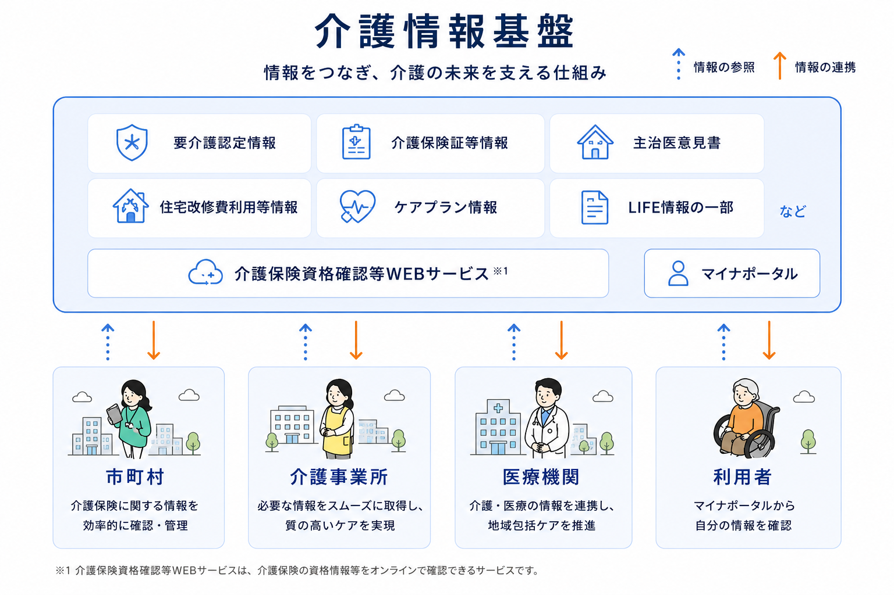

介護情報基盤
介護情報基盤の全体像
介護情報基盤は、利用者・介護事業所・医療機関が 必要な情報を安全に共有するための仕組みです。

介護情報基盤とは
介護情報基盤は、介護・医療・自治体が保有する 情報を適切に共有するための全国共通基盤です。
要介護認定情報やケアプラン情報、 主治医意見書などを安全に連携することで、 より質の高い介護サービスの実現を目指しています。
介護情報基盤の導入メリット
事務作業の効率化
紙での手間や負担がかかる作業を減らし、 より素早く簡単に業務を行えます。
情報をひとつに集約
介護保険資格・認定情報・主治医意見書・ ケアプランなどの情報を一元管理し、 関係機関で共有できます。
手続きをリアルタイムで
介護に関する申請・提出・受信・確認などを オンラインで迅速に行えます。